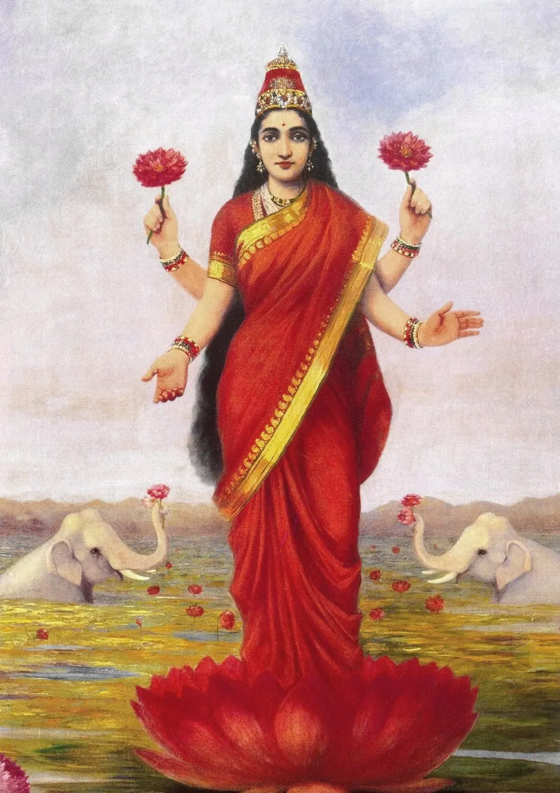

Gajalakshmi Temple Ujjain Diwali 2026: Lakshmi and Ganesh Temples

The Gajalakshmi Temple in Ujjain is a Lakshmi shrine where the goddess is shown seated on an elephant, and its biggest days are Dhanteras (Friday, 6 November 2026) through Diwali (Sunday, 8 November) and the day after. A local report says it stays open round the clock for the five days of Diwali, and that on Dhanteras traders bring their account books for blessings. We found no official timetable, so please verify locally before you go.
For a family that wants to begin the new year with Lakshmi's blessing, Ujjain offers more than one door: Gajalakshmi, the Mahalakshmi seat at Harsiddhi, and Chintaman Ganesh, where Ganesh ji is remembered before any new beginning. Here is how we would arrange the days for our own parents, with every source named and every gap admitted.
Dates for Dhanteras and Diwali 2026
According to Hindu Tone, the five-day festival runs from Dhanteras on Friday, 6 November to Bhai Dooj on Tuesday, 10 November, with Diwali on Sunday, 8 November. SmartPuja also gives Sunday, 8 November for Lakshmi Puja and says the best time is Pradosh Kaal.
Muhurat windows differ between websites and between cities. For Dhanteras, Shubh Panchang and SmartPuja give different New Delhi times, so we will not quote one for Ujjain. Ask your family pandit ji for the Ujjain muhurat and check a local panchang.
Gajalakshmi Temple, Ujjain: what we know
At most Lakshmi shrines the goddess sits on a lotus. Here she is seated on an elephant, the form called Gaja Lakshmi, one of the eight forms of Lakshmi known as the Ashta Lakshmi. Drik Panchang says the temple also holds a Dashavatara idol of Vishnu, carved in black stone, which it calls about two thousand years old.
A local news-style article tells the temple's story: during the Pandavas' exile, Kunti wished to perform an Ashta Lakshmi puja, Indra sent his elephant Airavata, and Lakshmi appeared upon it. The same article says the Pandavas later regained their kingdom through the goddess's blessing. This is the temple's tradition as reported; we cannot verify it independently. The page gives no street address, and a Facebook listing places a "Gaj Laxmi Mandir" in Nai Peth, Ujjain. Please confirm the location with your driver or caretaker.

What happens on Dhanteras and Diwali
The local article says business people bring their account books on Dhanteras, receive blessings, chant mantras and draw yantras in the ledgers. From Dhanteras, devotees are given blessed items as prasad: yellow rice, cowrie shells, coins and turmeric knots, which families keep in cash boxes or home safes. It says the temple is open 24 hours during the five days of Diwali, and that on the day after Diwali (Suhag Padwa) prasad is given from the morning, with women receiving suhag items.
These are descriptions from one article, not an official schedule. Practices and hours can change from year to year, so please verify with the temple or its priests.
A note on paid online pujas
A commercial listing on Srimandir advertises a three-day mahapuja at the temple starting 6 November. We have not verified it with the temple and are not recommending any paid service. If you want a puja performed, arrange it in person.
Harsiddhi: the seat of Mahalakshmi
The MP Tourism page says the Harsiddhi temple houses Goddess Annapurna, Goddess Mahalakshmi and Goddess Mahasaraswati, and sits about 600 metres from Mahakaleshwar. It lists the temple as open daily from 5:00 AM to 7:00 PM, with morning aarti from 7:00 to 8:00 AM and evening aarti at 7:00 PM. It describes two pillars with 726 lamp holders, which look especially fine when lit. Our Navratri in Ujjain guide covers the lamp towers in more detail.
Because the temple closes at 7:00 PM by that listing, an evening visit on Diwali night needs checking in advance. Go in the afternoon if you want to be sure.
Chintaman Ganesh: begin with Ganesh ji
On Diwali families pray to Lakshmi and Ganesh together, so a visit to Chintaman Ganesh fits naturally. Wikipedia places it in Fatehabad, about 7 km south-west of Ujjain town, and says it dates back to the 11th and 12th centuries when the Paramaras ruled Malwa. A belief that Sita established the original temple is also mentioned there.
Timings in the sources disagree. Ujjain Darshan gives 5:00 AM to 10:00 PM, while Shubh Panchang gives 6:00 AM to 9:30 PM, and aarti times vary between them. Treat any figure as approximate and ask at the gate. It is a short car ride from the city, so plan about half a day with the return.
A gentle Dhanteras to Diwali plan
- Dhanteras (Friday, 6 November): arrive or settle in, rest, and visit Gajalakshmi in the morning if your pandit ji agrees. If you buy something small, such as a utensil or a coin, you can bring it along as a family tradition.
- The day between (Saturday, 7 November): Chintaman Ganesh in the morning and an easy afternoon. Calendars differ on Choti Diwali, so check yours.
- Diwali (Sunday, 8 November): Harsiddhi in the afternoon, Mahakal darshan if crowds allow, and Lakshmi puja at the villa at the Ujjain muhurat. Read our notes on Mahakaleshwar at Diwali before you plan the temple.
- Day after Diwali: Gajalakshmi's Suhag Padwa prasad is distributed from morning per the local article, so mothers and daughters may want to be there early.
For the wider festival, see Diwali in Ujjain 2026 and our travel page for getting around.
Tips for elders and children
- Festival lanes are crowded. Go early, and keep one family member in charge of the phone and the footwear token.
- Carry water, a light shawl for the morning and small change for offerings.
- Do not travel on a tight schedule. Three temples in one day is a lot for a grandparent.
Where to stay near these temples
All five AP Villas are within 2 km of Mahakaleshwar Jyotirlinga, about 6 minutes by car or 12 minutes on foot, with a complimentary Mahakal shuttle for in-house guests (up to 5 guests per trip). After a day of temple lanes, a quiet kitchen and a short ride back matter.
Rudrangan Suites: our newest home for Diwali


Rudrangan Suites opened in 2026 with designer finishes, premium linens and garden seating. It has 3 bedrooms, sleeps 6 and starts from ₹5,200 per night. There is a lift, it is wheelchair friendly and pets are welcome. The kitchen has an induction cooktop, microwave and mini fridge, so your family can prepare prasad and sweets for puja at home. Check-in is 10:30 AM and check-out 9:30 AM.
For bigger families
- Divinestay: 3 bedrooms, sleeps 8, from ₹5,500 per night, with a private rooftop.
- Villa Aranya: 3 bedrooms, sleeps 8, from ₹5,800 per night.
Our caretaker will explain the Bhasma Aarti booking process on arrival evening; the help is complimentary and the temple's own permit is booked by you. See all five on our villas page. Festival dates have stricter cancellation terms, so please ask us on WhatsApp.
Frequently asked questions
When is Dhanteras 2026?
Dhanteras falls on Friday, 6 November 2026, with Diwali on Sunday, 8 November, according to Hindu Tone. Muhurat windows differ by website and city, so ask your pandit ji for the Ujjain timing and check a local panchang before the puja.
What is special about the Gajalakshmi Temple in Ujjain?
Lakshmi is shown seated on an elephant, the Gaja Lakshmi form. Drik Panchang adds that the temple holds an old black-stone Dashavatara idol of Vishnu. Local reports describe Dhanteras ledger blessings and prasad of cowrie shells, coins and turmeric. These details are from secondary sources, so please verify.
Is the Gajalakshmi Temple open 24 hours on Diwali?
One local article says it stays open 24 hours for the five days of Diwali. We found no official schedule or regular daily timings, so please confirm with the temple or your caretaker the day before you go.
Which other temples in Ujjain suit Lakshmi and Ganesh puja?
Harsiddhi, which houses Mahalakshmi along with Annapurna and Mahasaraswati, and Chintaman Ganesh in Fatehabad. Both are old, much-loved shrines. Timings differ between sources, so check before travelling, especially for the Diwali evening.
Can we do Lakshmi puja in our villa?
Yes. Every villa has a full kitchen where you can prepare prasad, and you are welcome to set up a small puja corner. Please keep diyas away from curtains and linen, and ask our caretaker for help with anything you need. See our contact page.
Sources
- Journalist AV: Ujjain Gajlaxmi Mandir
- Drik Panchang: Gaja Lakshmi
- Srimandir: commercial puja listing (not verified)
- Hindu Tone: Diwali 2026, Dhanteras to Bhai Dooj
- SmartPuja: Diwali 2026 Lakshmi Puja
- Shubh Panchang: Dhanteras 2026
- SmartPuja: Dhanteras 2026
- MP Tourism: Harsiddhi Temple
- Wikipedia: Chintaman Ganesh Temple
- Ujjain Darshan: Chintaman Ganesh
- Shubh Panchang: Chintaman Ganesh Temple
Timings, prices and dates change, especially on festival days. Please verify before you travel with the official temple or government site.
If Lakshmi puja is bringing your family to Ujjain this Diwali, write to us and we will tell you honestly what is available. We would be glad to host you.
— Apoorv, Founder, AP Villas & Resorts